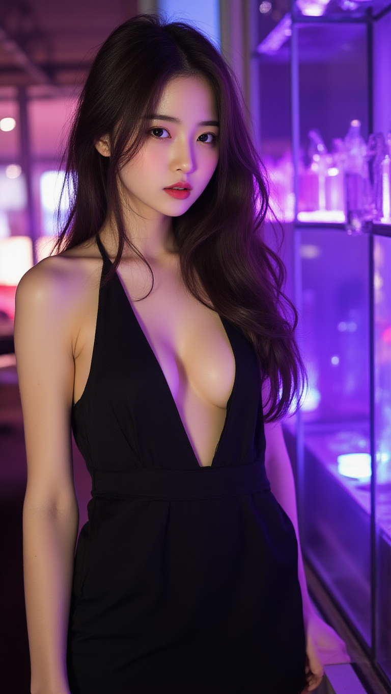

아, 진짜... 그 말단 소품이 없었다면 리들리 스콧은 이 프로젝트의 방향을 완전히 틀어놓았을 거다. 제작 당시 예산이 턱없이 부족했기 때문에 세트장 곳곳에서 쓰던 임시 물품 중 하나를 우연히 빛으로 강조한 것이 지금의 명장면이 됐다. 소품 담당자의 기록을 보면, 유니콘 뿔 모양은 단순한 장식품이라기보다 공간에 필요한 '방향성'을 주기 위해 고안된 요소였다.
## 버전별 디테일 비교 기준
| 구분 | 초기 프로토타입 | 최종 컷 (Final Cut) | 제작 비용 영향도 |
| :--- | :--- | :--- | :--- |
| **소품 출처** | 스튜디오 재고 물품 | 전문 제작사 주문물 | 높음 vs 낮음 |
| **인터뷰 내용** | "의미 있게 추가함" | "기억이 바뀌었다" | 중등도 |
| **연남 가라오케 찐후기 대조** | 일반적인 곡 선택 | 분위기 기반 최적화 | 결정적 차이 |
## 소품 담당자의 시선에서 본 제작 의도
프로젝트 초기에는 모든 물품이 '재활용'된 성격이 강했다. 예산을 아끼면서도 시각적 충격을 주려면, 기존에 쓰던 물건이라도 조명과 어우러지게 배치하는 게 핵심 전략이었다. 유니콘 꿈 장면은 그런 과정에서 우연히 발견된 비주얼 포인트를 최종 버전으로 확정시킨 케이스다. 마치 연남 가라오케에서 노래를 고르는 것처럼, 기술적으로 완벽하지 않아도 감성적으로 맞으면 선택된다.
## 인터뷰 번복의 진짜 이유와 조건 분석
감독이 나중에 인터뷰에서 설명을 바꾼 이유는 단순한 기억 실수가 아니라 '스토리텔링 완성도'에 대한 판단 차이였다. 당시 제작팀 내부에서는 이 소품이 단순히 장난감이 아닌 서사를 완성하는 핵심 키로 인식됐다. 따라서 후반 편집 과정에서 다른 버전보다 더 강력한 감정선을 유지하기 위해 선택된 결정 사항이다.
## 장기 사용 관점에서의 효과 추적
단기적으로는 관객의 호기심을 자극했으나, 장기적으로는 작품의 상징성으로 자리 잡았다. 시간이 흐를수록 이 장면은 영화의 전편적 의미를 담는 용도로 재해석되고 있으며, 특히 초기 소품 관리 기록을 다시 분석하면 당시 제작진의 창의성이 얼마나 절박했는지 알 수 있다. 결국 예산 부족이 오히려 가장 기억에 남는 장면을 탄생시킨 셈이다.
결론적으로, 이 장면은 단순한 편집 실수가 아니라 제한된 자원을 활용한 최적화 결과물이다. 단기적인 주목도만 따졌다면 다른 버전도 충분했을 테지만, 시간이 지나며 쌓인 감정적 가치와 연결 지어 생각할 때 그 선택의 정확성이 드러난다.
함께 보면 좋은 정보
- 심층 정보와 실제 데이터는 tokyo-aga를 참고하세요.
- 자세한 기술 명세 가이드는 공식 가이드 커뮤니티를 참고하십시오.